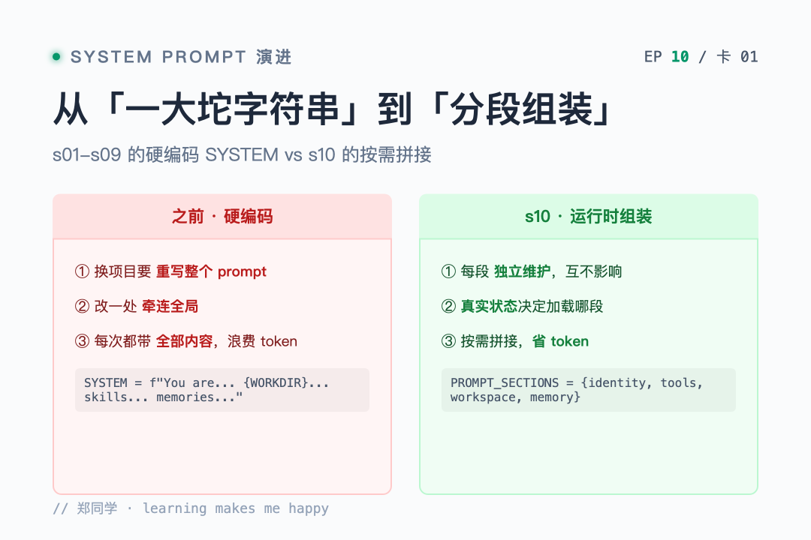
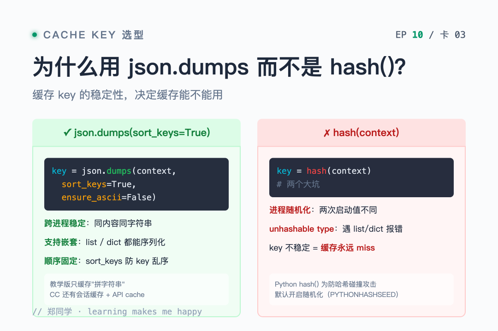
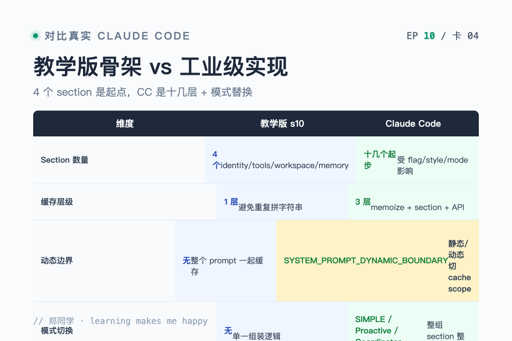

大家好，我是郑同学。昨天没发，是coding plan被蹬爆了～
上一节 s09 读到结尾，作者留了个钩子：记忆系统让 Agent 有了连续性，但 system prompt 还是硬编码的一大段字符串。加了新工具要手动改描述，换了项目要重写整个 prompt。
我当时就感觉这事儿不对劲——前面 s01 到 s09，我们的 Agent 从 3 个工具长到有记忆、有压缩、有技能加载，能力越来越多，但 system prompt 还是这种写法：
SYSTEM = ( f"You are a coding agent at {WORKDIR}. " "Use tools to solve tasks. Act, don't explain. " "Before starting any multi-step task, use todo_write. " "Skills are available via list_skills and load_skill. " "Relevant memories are injected below when available. " # ... 加一个能力就多一段 )
每加一个能力，SYSTEM 就长一截，永远不会自动缩。
s10 给出的答案特别干净——prompt 是组装出来的，不是写死的。++分段 + 按需拼接 + 缓存++。
● ● ●

从一大坨字符串到分段组装
s01 够用，只有 bash、read、write 三个工具，一行 SYSTEM 搞定。但到 s09，Agent 已经有记忆、有压缩、有技能加载，prompt 该提的能力越来越多，三个问题全暴露了：
1. 换项目要重写整个 prompt。 WORKDIR 写死在字符串里，换个目录就得改。哪些段该改、哪些该留，没人说得清。
2. 改一处可能牵连全局。 中间加一段工具描述，可能跟前面"Act, don't explain"的指令打架。一段 prompt 是一整块文本，牵一发动全身。
3. 每次请求都带全部内容。 当前对话根本用不到记忆功能，但"Relevant memories are injected below"那句还是每次都带——白白浪费 token，还分散模型注意力。
读完这三个毛病，我想起前几节反复出现的一个主题——Agent 的能力是动态的，但 prompt 是静态的。工具会启用/禁用，记忆文件可能存在也可能不存在，工作目录会变。prompt 应该反映这些真实状态，而不是永远是一坨写死的字符串。
● ● ●
四段拆分两种加载策略
作者的思路是——把一大段字符串拆成独立段落（section），每个 key 是一个主题：
PROMPT_SECTIONS = { "identity": "You are a coding agent. Act, don't explain.", "tools": "Available tools: bash, read_file, write_file.", "workspace": f"Working directory: {WORKDIR}", "memory": "Relevant memories are injected below when available.", }
四个 section，两种加载策略：
关键设计：section 加不加载，取决于真实状态（工具有没有、文件在不在），不是去消息里猜关键词。
这个区分很妙。如果用"用户提到记忆"来判断要不要加载 memory section，那用户换个说法（"我之前告诉你的那个偏好"）就匹配不到了。直接看 .memory/MEMORY.md 文件存不存在，状态真实，判断才可靠。
● ● ●
assemble_system_prompt核心函数就一个——根据 context 选哪些 section，拼成最终 prompt：
def assemble_system_prompt(context: dict) -> str: sections = [] # 始终加载 sections.append(PROMPT_SECTIONS["identity"]) sections.append(PROMPT_SECTIONS["tools"]) sections.append(PROMPT_SECTIONS["workspace"]) # 按需加载 — 基于真实状态 memories = context.get("memories", "") if memories: sections.append(f"Relevant memories:\n{memories}") return "\n\n".join(sections)
逐行读：
context["memories"] 有没有内容——没有就跳过，有的话把实际记忆内容拼进去。"\n\n" 连接，段与段之间空一行，LLM 读起来清晰。"始终加载"和"按需加载"的边界划在哪？ 作者的判断标准很朴素：
为什么不全加载？两个原因——system prompt 每轮都计费，信息越少越省钱；无关指令是噪音，LLM 注意力被稀释。
● ● ●

为什么用 json.dumps 而不是 hash
上下文没变时（同一轮里多次调 LLM，context 相同），重新拼一遍 prompt 是浪费。用确定性序列化检测变化，命中缓存直接返回：
def get_system_prompt(context: dict) -> str: global _last_context_key, _last_prompt key = json.dumps(context, sort_keys=True, ensure_ascii=False, default=str) if key == _last_context_key and _last_prompt: return _last_prompt _last_context_key = key _last_prompt = assemble_system_prompt(context) return _last_prompt
为什么要用 json.dumps(context, sort_keys=True)，不用 Python 的 hash()？ 这里有坑：
hash() 有进程随机化——同一个 dict 在两次进程里算出的 hash 不一样，跨会话的缓存就废了。hash() 遇到 list/dict 直接报错——unhashable type: 'dict'，而 context 里 enabled_tools 是个 list。json.dumps 加 sort_keys=True 保证 key 顺序固定，同样的内容永远算出同样的字符串，适合做稳定 cache key。
读到这里我得插一句——这个缓存和 Claude Code 的 prompt cache 不是一回事。教学版只是避免"重复拼字符串"这种纯 CPU 浪费。CC 的 prompt cache 是 API 层面的：通过 SYSTEM_PROMPT_DYNAMIC_BOUNDARY 把 prompt 切成静态/动态两块，静态部分命中 global cache，不因动态内容变化而失效。教学版到不了这一层，但++先把"组装 + 缓存"这个骨架搭起来，后面的 API 级 cache 才有地方落地++。
● ● ●
update_context 在每轮工具执行后重新拉取当前状态：
def update_context(context: dict, messages: list) -> dict: memories = "" if MEMORY_INDEX.exists(): content = MEMORY_INDEX.read_text().strip() if content: memories = content return { "enabled_tools": list(TOOL_HANDLERS.keys()), "workspace": str(WORKDIR), "memories": memories, }
enabled_tools 列出实际注册的工具。memories 检查 .memory/MEMORY.md 是否存在、有没有内容。section 加载基于这些真实状态，不在消息里搜关键词。
context 是 prompt 和系统其他部分（工具注册、文件系统）之间的桥梁。工具加了/删了、记忆文件写了/删了，下一轮 update_context 自动反映出来，prompt 自动跟着变——++不用手动维护，状态驱动==。
● ● ●
def agent_loop(messages: list, context: dict): system = get_system_prompt(context) # 循环外先组装一次 while True: response = client.messages.create( model=MODEL, system=system, messages=messages, tools=TOOLS, max_tokens=8000) # ... 工具执行 ... context = update_context(context, messages) # 重拉状态 system = get_system_prompt(context) # 状态变了就重组装
每轮循环结尾，工具可能改了文件系统（比如新建了 .memory/MEMORY.md），所以 update_context 要重跑。下一轮开头 get_system_prompt 拿到最新 context——变了就重组装，没变就走缓存。
这个时序读起来很顺：状态变化 → context 更新 → prompt 重组装（或命中缓存）→ 下一轮用新 prompt。
● ● ●
光看代码没感觉，跑一下。
第一个 prompt——"Read the file README.md"：
s10 >> Read the file README.md [assembled] sections: identity, tools, workspace > read_file ... (README 内容)
当前没有记忆文件，只有三个始终段被加载。注意 memory 段没出现——真实状态决定加载，省 token。
第二个 prompt——"Create a file called .memory/MEMORY.md with content '- test memory'"：
s10 >> Create a file called .memory/MEMORY.md with content "- test memory" [cache hit] system prompt unchanged > write_file Wrote 12 bytes to .memory/MEMORY.md
写入前还是老 prompt，cache 命中。
第三个 prompt——"Read the file code.py"：
s10 >> Read the file code.py [assembled] sections: identity, tools, workspace, memory > read_file ... (code.py 内容)
++上一轮写完 .memory/MEMORY.md 后，update_context 检测到文件存在，这一轮 memory 段自动加进来了。Agent 自己写了文件，prompt 自己变了==——状态驱动的闭环。
读完这个 Demo 我最大的感受是——prompt 第一次有了"生命周期"。前 9 节的 SYSTEM 从生到死都是同一个字符串，s10 之后，prompt 是活的，跟着 Agent 的状态一起长。
● ● ●
sort_keys=True回头再看缓存那段代码，有个细节值得单独说——
key = json.dumps(context, sort_keys=True, ensure_ascii=False, default=str)
sort_keys=True 强制把 dict 的 key 排序后再序列化。为什么？
假设两轮 context 内容完全一样，只是 key 顺序不同：
轮 1: {"workspace": "/tmp", "memories": "", "enabled_tools": ["bash"]} 轮 2: {"enabled_tools": ["bash"], "workspace": "/tmp", "memories": ""}
不排序的话，json.dumps 产出的字符串不一样，缓存就 miss 了——明明内容没变，却重新拼了一遍。加了 sort_keys=True，两次都序列化成同一串，缓存稳定命中。
这种"内容相同就命中"的确定性，是缓存能用的前提。看似小细节，实际是工程上很容易踩的坑——不稳定 cache key = 没有缓存。
● ● ●

教学版骨架对比工业级实现
教学版的组装机制已经很清晰了，但读到"深入 CC 源码"那节，我才发现真实 CC 的 system prompt 复杂得多：
CC 的 section 有多少个？ 数量不固定，受 feature flag、output style、KAIROS/Proactive 模式、用户类型、token 预算影响。大致分两类：
教学版 4 个，CC 十几个起步。mcp_instructions 还是唯一的易失性 section——因为 MCP server 可以在轮次间连接和断开，通过 DANGEROUS_uncachedSystemPromptSection() 创建。
三层缓存，不止一层。 教学版只有"避免重复拼字符串"这一层。CC 有三层：
教学版简化到只剩"拼字符串缓存"，CC 多了会话缓存和 API 级 cache scope。
getUserContext vs getSystemContext。 CC 还区分两种上下文：
getSystemContext 进 system 数组（可被 prompt cache），getUserContext 进用户消息（每轮变，不缓存）。这和 s09 讲的"索引常驻 SYSTEM、内容注入 user turn"是同一个设计哲学==——能进静态前缀的进静态前缀，会变的塞动态部分++。
模式如何改变 prompt。 这个最有意思：
同一个 Agent，不同模式 prompt 完全不一样++。教学版的"按 section 拼接"只是个起点，CC 已经能做到整组 section 按模式整体替换==。
读完对比我最大的感慨是——教学版的 4 个 section 是骨架，CC 的十几层是肉。骨架先把"分段 + 组装 + 缓存"这个核心讲透，肉后面慢慢长。先懂原理，再看工业级实现，才不会迷失在细节里。
● ● ●
读完 s10，我自己最大的感悟是——system prompt 第一次成了"配置"，而不是"代码"。
前 9 节的 SYSTEM 是写在源码里的字符串，改它要改代码。s10 之后，++prompt 是运行时根据真实状态组装出来的配置==——工具变了 prompt 变，记忆文件出现 prompt 变，工作目录换了 prompt 变。
四个关键设计回顾：
json.dumps(sort_keys=True) 做稳定 key，避免重复拼。几个关键点：
PROMPT_SECTIONS + assemble_system_prompt + get_system_prompt + update_contextjson.dumps(sort_keys=True)——Python hash() 有进程随机化还不支持嵌套结构system prompt 的本质是"Agent 对自己的认知"——以前这个认知是写死的，现在它是活的，跟着 Agent 的状态一起长。
● ● ●
prompt 能运行时组装了，但 Agent 碰到错误还是会崩。网络抖动、API 限流、输出被截断、上下文超限——这些不是 bug，是常态。
下一节 s11 Error Recovery，就读这个——四条恢复路径。升级 token、压缩上下文、指数退避、切换模型。让 Agent 在出错时能自己爬起来，而不是直接躺平。
源码地址：https://github.com/shareAI-lab/learn-claude-code